Backhoe with Custom Valve
This example shows the performance of various hydraulic valves in a backhoe actuation system. The abstract valve includes no spool dynamics. The spool valve models an electromagnetically actuated spool with a centering spring. The flapper-nozzle with centering spring uses the hydraulic pressure to actuate the spool. The flapper-nozzle with feedback uses hydraulic pressure to actuate the spool, and spool is connected to the flapper providing a mechanical form of feedback within the system.
The model can be configured to use any of these valve types, and hydraulic forces on the spool due to flow through the orifices can be enabled or disabled for each valve type that models spool dynamics.
Contents
- Model
- Tilt Actuator Subsystem
- Abstract Valve Variant
- Spool Valve Variant
- Nozzle Centering Spring Valve Variant
- Nozzle Feedback Spring Valve Variant
- Simulation Results from Simscape Logging
- Orifice Hydraulic Forces in Spool Valve
- Orifice Hydraulic Forces in Flapper Nozzle Valve with Centering Spring
- Orifice Hydraulic Forces in Flapper Nozzle Valve with Feedback Spring
Model
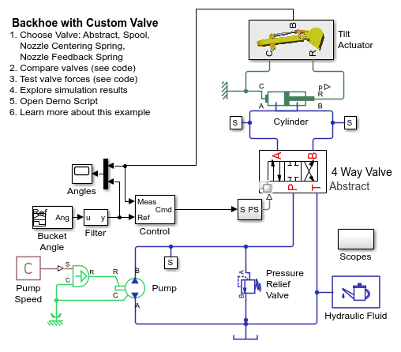Tilt Actuator Subsystem
Abstract Valve Variant
Spool Valve Variant
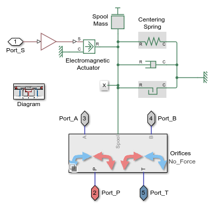Nozzle Centering Spring Valve Variant
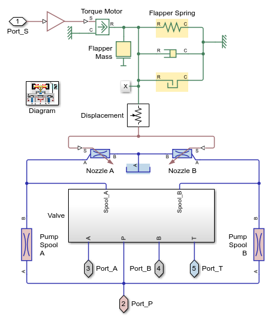Nozzle Feedback Spring Valve Variant
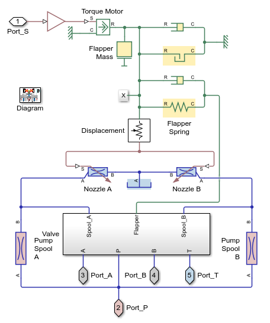Simulation Results from Simscape Logging
The following plots compare system performance with different valve types. Orifice hydraulic forces on the spool are neglected.
Testing Abstract No Force Testing Spool No Force Testing Flapper Nozzle Centering Spring No Force Testing Flapper Nozzle Feedback Spring No Force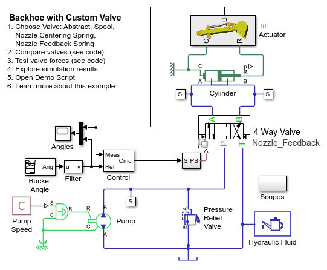 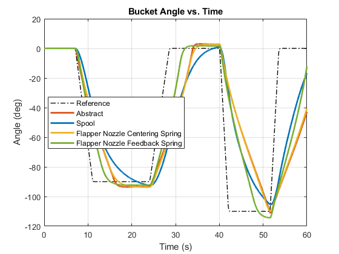

Orifice Hydraulic Forces in Spool Valve
The following plots compare system performance if hydraulic forces on the spool are neglected or included.
Testing No_Force Testing With_Force


Orifice Hydraulic Forces in Flapper Nozzle Valve with Centering Spring
The following plots compare system performance if hydraulic forces on the spool are neglected or included.
Testing No_Force Testing With_Force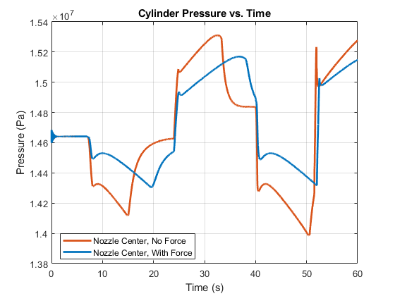 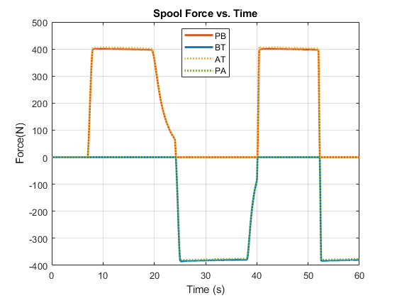
Orifice Hydraulic Forces in Flapper Nozzle Valve with Feedback Spring
The following plots compare system performance if hydraulic forces on the spool are neglected or included.
Testing No_Force Testing With_Force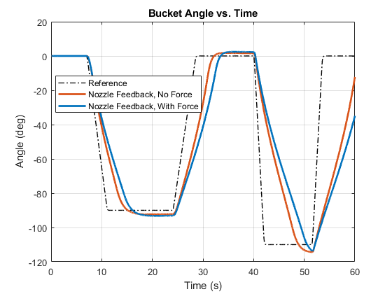 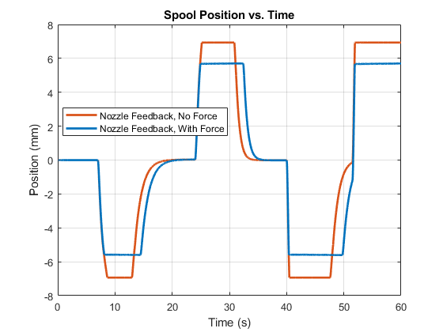 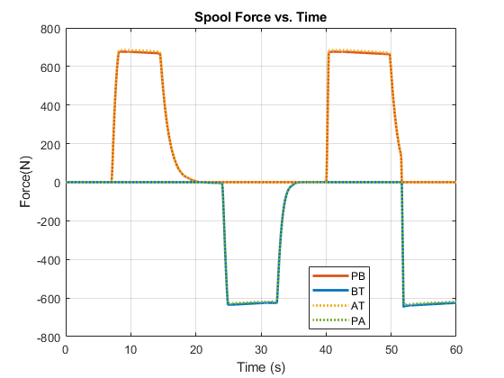